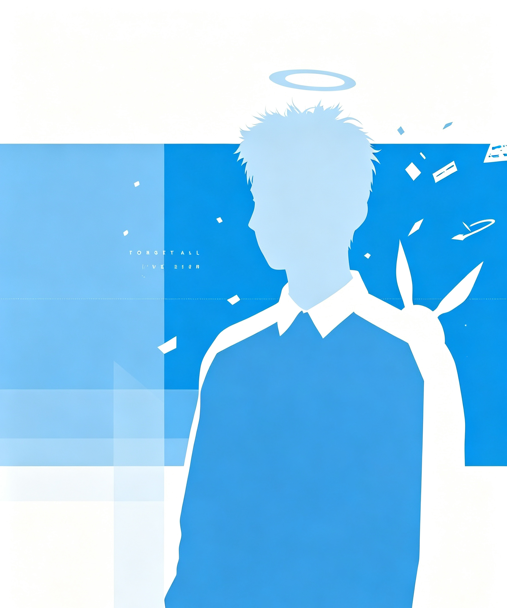

行 迹
T H E M A S S E S ' T R A V E L S
GRID 64PX · SNAP ON
<keyframes>
xto[visibility:hidden]
animation:x
1.5s forwards
STOP /// render.halt()
XYZ
Camera · Move · Ortho
T
H
E
M
A
S
S
E
S'
T
R
A
V
E
L
S
ACT-1 [ ALIBI OF THE GREY DOVES · 关于 ]
关 于SELF / 自我介绍 / 001
我是陈麒擅，天津美术学院大一学生，主要专业为公共艺术。
学习方向：人工智能运用、编程语言认识、视频剪辑及视频创作、3D 建模及场景搭建；绘画为我的主攻方向。
在代码与画笔之间，我尝试在生活的实践中搭建属于这个时代的【数字温情】——将冷冷的文字编码讲述时代温情，使其成为关注时代生活的窗口。让设计服务于大众生活。

.dove{
opacity:.86;
mix-blend-mode:multiply;
}
<div class="sacred">load
ACT-2 [ DIGITAL SHRINE · 作品 ]
作 品WORKS / 数字神龛系列 / 002
NO.01

拱龛研究数字拼贴 / 2026
NO.02

圣鸽轨道AI 生成 / 2026
NO.03

视口之内3D 建模 / 2026
NO.04

迁徙缓存数字影像 / 2026
||| pause 0:46 / 3:12 render.queue
ACT-3 [ THE JUDGE'S DAY OFF · 轨迹 ]
轨 迹LOG / 学习与实践 / 003
2026
「数字神龛」视觉体系实验创作个人项目 / 生成艺术 · 拼贴
2026
公共艺术专业课程研习天津美术学院 / 空间与构筑
2026
AI 生成影像系列「行迹」启动人工智能运用 / 数字影像
2026
入学天津美术学院公共艺术专业 / 大一在读
2025
绘画基础训练与速写长期计划主攻方向 / 持续进行
for(bird of flock){
bird.follow(orbit)
}
ACT-4 [ REST · 联系 ]
R E S T
— END OF TAPE · © 2026 陈麒擅 —
+ + ✦STOP // fin.